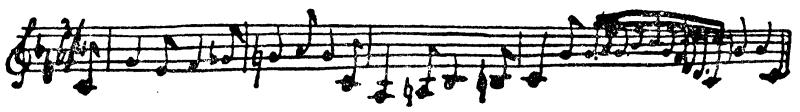

致玛丽亚·恩格斯
曼海姆
1841年3月8―11日于不来梅
1841年3月8日
第一次发表于《马克思恩格斯全集》1930年国际版第1部分第2卷
原文是德文
亲爱的玛丽亚：
“某某谨启”，这是我在公函中写的最后几个字，以此结束了我今天的商行事务，以便——以便——以便，你看，该怎么表达才能更得体呢？怎么办呢，现在又没有诗兴；为了给你写信，最好还是有什么就说什么吧。由于我正在消化我的午饭，所以没有时间多作考虑，势必想到什么就给你写什么。可是我首先想到的是一支雪茄，我现在就把它点着，因为陛下不在，陛下就是老头儿FN1，他已经获得这个称号，因为我们决定练习宫廷礼节。要知道，洛伊波尔德商行的全体人员在不久的将来都将成为大臣和枢密侍从，这是十分肯定的、毫无疑问的。当你看到我穿上挂着金钥匙的黑色燕尾服的时候，你会感到吃惊，当然，我仍然保持我的老样子，不亢不卑，也不会为了取悦于任何一个国王而剃掉胡子。我的胡子现在正欣欣向荣，而且还在长，我毫不怀疑，如果春天我有幸在曼海姆同你饮酒，那时你将因它的丰姿神采而大吃一惊。
理查·罗特在一个星期以前离开这里到南德意志和瑞士等地作一次长途旅行。感谢上帝，我将离开这个沉闷的小城市，在这里，没有别的事可做，只有击剑、吃、喝、睡和刻苦用功，voilà toutFN2。不知你是否已经听说我和父亲在4月底可能到意大利去，届时我将拜访你，以示敬意。如果你的举止大方，我或许会带一些东西给你，但是，如果你神气活现、不可一世，那你就要吃苦头。如果你又写信胡说一通，就象在上一封信中以剑术课挖苦我那样，你必然逃脱不了公正的惩罚。我知道了Stabat materFN3是佩戈莱西写的，感到很高兴。你无论如何应当把改编的钢琴曲连同所有的声乐分谱抄一份给我，要象改编的歌剧钢琴曲一样，使各个声部同和声上下对齐。我记得，在佩戈莱西的Stabat mater里好象没有男高音部和男低音部，倒是有许多女高音部和女中音部。不过，这没有关系。
如果今年春天我真的去米兰，就能在那里会见罗特和爱北斐特人威廉·布兰克。因为有土耳其烟草和Lacrime di ChristoFN4，在那里我们会过得很惬意。我们要使自己名不虚传，让意大利人半年之后还会想起三个愉快的德国人。
我很喜欢你对你们那有益无害的狂欢节的一番描写。我真想看看你的打扮。这里除了一些我不参加的、乏味的化装舞会，没有任何愉快的东西。柏林的狂欢节又遭到可耻的失败。这种事情到底还是科伦人搞得最好。
但是，你有一点不能与我相比。今天，3月10日，星期三，你听不到贝多芬的C小调交响曲，而我能听到。这首交响曲，以及英雄交响曲，是我喜爱的作品。你要好好地练习演奏贝多芬的奏鸣曲和交响曲，免得让我将来为你害臊。我要听的不是改编的钢琴曲，而是整个乐队的演奏。
3月11日。昨天晚上听的才是真正的交响乐呢！如果你没有听过这部宏伟壮丽的作品，那么你一生就根本没有听过任何音乐。第一乐章中这种充满绝望的悲哀，柔板中表现的那种哀诗般的忧伤，那种温柔的爱的倾诉，而在第三和第四乐章中由长号奏出的这种坚强有力的、富有青春气息的自由的欢乐！此外，昨天我还听到一个可怜的法国人的演唱，他唱的大致是这样：

Semper TuusFN7
弗里德里希
脚 注
FN1 亨利希·洛伊波尔德。——编者注
FN2 这就是一切。——编者注
FN3 见本卷第586―587页。——编者注
FN4 基督之泪（酒名）。——编者注
FN5 《法国流浪者》。——编者注
FN6 “啊，我多么喜爱西班牙！”——编者注
FN7 永远是你的。——编者注